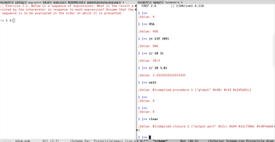

Задачи по курсу SICP. Введение.
Есть такой замечательный курс SICP. Я его когда-то начинал читать, но до конца не прошел, думаю на этот раз получится. Буду делать упражнения из него и выкладывать сюда свои решения.
Первым делом надо настроить emacs что бы удобно было тестировать программы. [4/4]
-
[X]Установить mit scheme по Инструкции. -
[X]Создать файл в 1-ой вкладке emacs c разрешением .scm файл откроется в scheme-mode -
[X]Запустить в другой окне (C-x 3 - создать окно) M-x run-scheme RET -
[X]Любое выражение из первой вкладки можно выполнить по C-x C-e.
Получится что-то вроде:

Пишем что-то в правой вкладке, жмем C-x C-e, видим результат в левой.